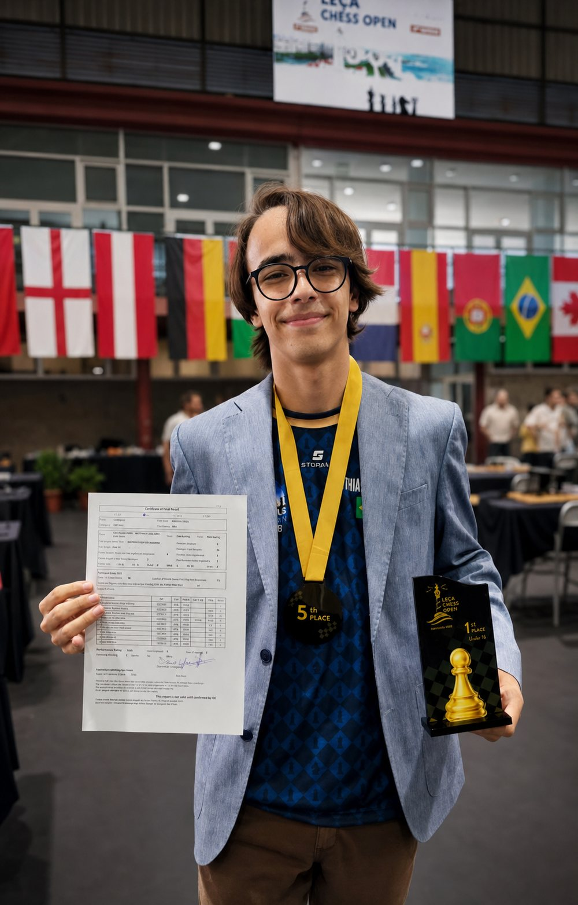

O que ele já fez no tabuleiro
Última conquista · agosto de 2026
5º no geral, performance de 2553 e a primeira norma de MI
No Leça Chess Open, em Portugal, Mathias terminou empatado em pontos com o campeão e ficou em 5º apenas no desempate — entre 20 federações, enfrentando quatro Grandes Mestres. Foi esse resultado que fechou sua primeira norma de Mestre Internacional. Levou junto o troféu de 1º lugar da categoria Sub-14.
Ver o que falta para o título